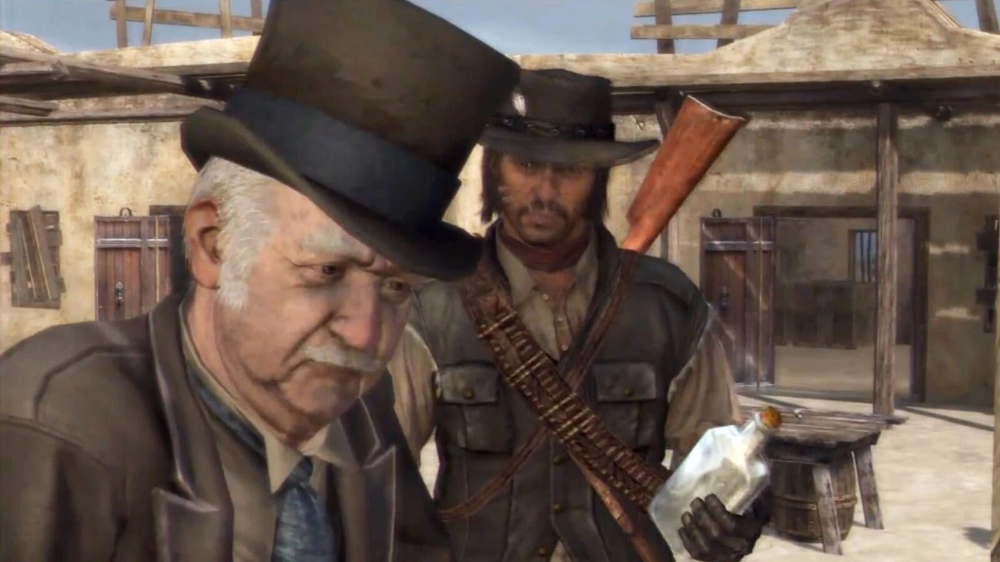
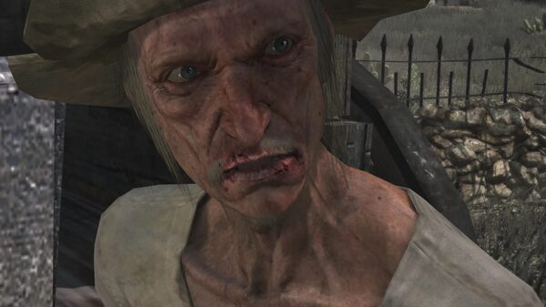
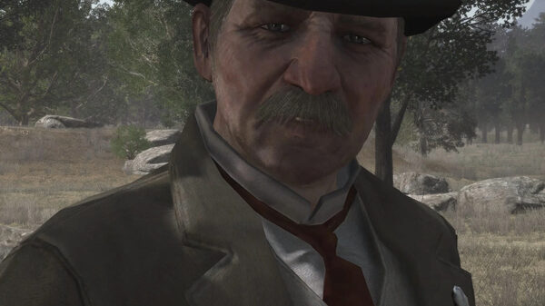
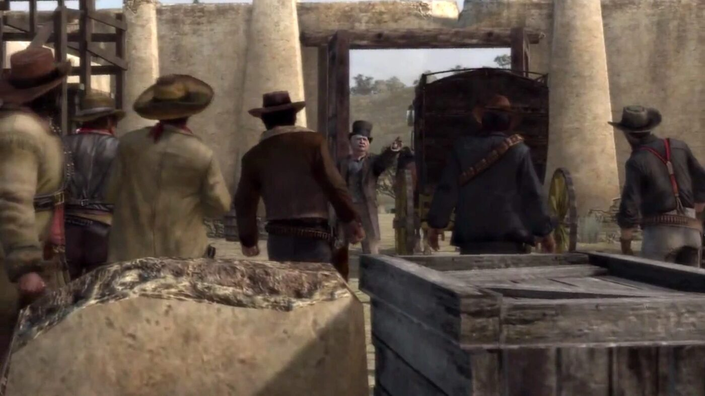

Character · New Austin
Nigel West Dickens
Nigel West Dickens is a travelling con-artist who sells fraudulent miracle "elixirs" from an ornate stagecoach across New Austin. Despite John Marston's dislike of him, he becomes a central ally in the plan to assault Fort Mercer.
An American who affects a fake English accent, he is the man who connects John with Seth Briars and the smuggler Irish.
- Born
- c. 1846, Fort Wayne, Indiana
- Status
- Alive (end of RDR1)
- Nationality
- American
- Trade
- Travelling elixir salesman
- Games
- Red Dead Redemption
Biography
Rescued in the sun
In "Old Swindler Blues", John finds Dickens shot and left in the sun near his stagecoach south of Coot's Chapel, and hauls him to the Armadillo doctor while fighting off bandits. Dickens then becomes the networker who assembles John's allies.
The Trojan horse
In "The Assault on Fort Mercer", Dickens supplies his armoured stagecoach for a Trojan-horse attack that wipes out Williamson's gang, though Williamson has already fled to Mexico. Later, John finds Dickens arrested in Blackwater for narcotics and vouches for him.
Personality
Dickens is a charming, cowardly fraud who plays the refined English gentleman. His elixir is little more than alcohol laced with opium.
Relationships

John Marston
The gunman he recruits into the Fort Mercer plan, and who later vouches for him in Blackwater.

Seth Briars
The grave-robber he introduces to John as part of the plan.

Edgar Ross
The Bureau agent who releases him in Blackwater once John speaks for him.
Fate
Dickens survives Red Dead Redemption. After John vouches for him in Blackwater, Agent Edgar Ross sarcastically calls him a hero and he walks free.
Behind the scenes
Nigel West Dickens appears in Red Dead Redemption (2010) and its 2024 remaster. He is voiced by Don Creech, and his manner is based on the comedian W.C. Fields.
Trivia
- Red Dead Redemption 2 mentions him in an Annesburg anecdote: a woman runs him out of town with a shotgun after his elixir addicts her elderly parents.
- He has a scar across his neck, implying he was once nearly lynched as a con man.
- His fake English accent hides an origin in Fort Wayne, Indiana.
Gallery
